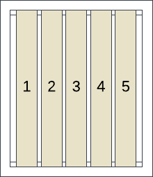

Plan
Planning ahead is key to ensuring a successful inspection.
Decide When to Perform Your Activities at the Apiary
Plan for when you will be working on your hives.
|
Good Warmer temperatures are best. The hive is kept around 94° by the bees, so your breaking it open will cause the bees to lose the heat. It will take them the better part of the next day to regain that temperature. |
Warning If the temperature is below 40°, the only reason you should open any part of the hive is to feed them. Avoid bad weather. Certainly rainy days are out, but if the weather is bad (or headed that way), the bees can sense it and are more easily upset when you disturb their home. Even days where it is too windy will cause the bees to be more suspect of your activities. Avoid opening or disturbing colonies when neighbors or the general public are participating in outdoor activities within 150 feet of the apiary. |
|
Caution |
Plan Your Work
Plan what you want to achieve at the inspection. A good place to start for this is to look at your records from the prior inspections. Some examples are below.
|
Activity |
Considerations |
|
General Inspection |
|
|
Check on space utilization |
|
|
Honey harvesting |
|
|
Check on varroa |
|
|
Weather-related changes |
|
|
Pest-related changes |
|
|
Splitting the colony |
|
|
Combining two colonies, or adding a swarm to a hive |
|
|
Feeding the colony |
|
|
Cleaning up the area around the apiary |
|
Pack What You Will Need
Collect the items you will need when at the apiary. Some items to consider include:
- Hive tool(s) -- at least one for each person
- Sharpie to mark any added frames with the year they were added
- Several entrance reducers, including ones with robbing screens
- Stiff rod for cleaning out the bottom of the hive
- Bee brush
- Cappings scratcher
- Extra beetle traps (I prefer the reusable beetle jail over the one-time use beetle blaster)
- Mineral oil and pollen for the beetle traps
- Extra ratchet straps
- Waste container, preferably with a lid. This will get used when you remove any propolis or burr comb from the honey. Don't simply toss it onto the ground: this encourages pests.
- Extra smoker fuel
- A lighter to re-light the smoker. I recommend one which has a long reach so you can get down into the smoker if necessary. Also, look for one which works well in the wind.
- Frame hanger
- Frame spacer, if you are wanting to do this on your honey supers.
Get Ready
- Gather what you have planned to need.
- Start your smoker.
- Get your safety equipment on. If you are expecting the colony to be aggressive or angry, I recommend you wear boots which protect your ankles, combined with elastic straps around your trouser legs.
Inspect the Colony
Observe the Apiary
As you approach and enter the apiary,
- Look around to see if any damage has been done to the hives in the apiary.
- Look around the apiary to see if there is are any indications that pests have been around.
- Scratches on the hives, and
- Scratches in the soil around the hives.
Observe the Outside of the Hive You Are Planning to Inspect
Now, for each colony you are inspecting, before opening the hive, look at the outside of the hive.
- Is there an extraordinary amount of dead bees on the ground? A few hundred is expected (remember,they only live 6 weeks), but thousands is not good.
- Are there bees crawling around on the ground in front of the hive?
- Is the colony doing anything odd or unexpected?
- Note any changes in defensiveness. Does an increase (or decrease) make sense for:
- This colony, based on their history,
- The time of year, and
- The weather conditions?
- Look for any excess amounts of diarrhea on the outside of the hive, indicating dysentery.
- Look at the bees coming into the hive and leaving from it.
- Check the traffic coming into and out from the hive. Does the quantity of bees seem appropriate for the time of year?
- Are the bees bringing in pollen? Should they be doing so this time of year?
Inspect the Colony
When you open up the hive,
- Is there an unusual odor? This could be American Foul Brood (or it could be from the bees collecting pollen from goldenrod).
- Look for indications of diseases. Some indications include hairless or wingless bees, or bees with K-shaped wings.
- Are there excess small hive beetles?
- Are there other pests of note?

5-Frame Langstroth Hive
Use the images to the right & below for this set of instructions.
|
Traditional Hive Tool Use |
|
J-Hook Hive Tool Use |


The hive tool is often used incorrectly when breaking the frame loose from the hive body. It is best to rotate the tool as shown in the pictures to the left. (You can click on either of the pictures to see a larger version.)
As you prepare to remove the frames for inspection, it is recommended to start by removing frame ②.
Frame ① will probably have its left side attached to the box using wax or propolis, and
Frame ⑤ will probably have its right side attached to the box using wax or propolis.
Removing either of these frames will probably unnecessarily jar the hive, making the bees upset. Also, if the queen is between either frame and the hive body, it is easy to damage or kill her.
Be sure to pull the ② frame straight out and do not let it press against the frames on either side. Again, you do not want to risk damaging or killing the queen.
Once frame ② has been removed, frame ③ can be shifted to the left (towards frame ①) and then removed for inspection. Similarly, frame ⑤ can then be shifted to towards the left before removing it.
Removing either frame ① or ⑤ is rarely necessary. But if either should be removed, be careful when detaching the frame from the hive’s body.
As you inspect the frames, use the guidance below.
|
Expect to See |
Indications of problems or action needed |
|
Honey Supers | |
|
|
|
Brood Chamber | |
|
|
Closing Up the Hive
As you close up the hive after completing the inspection:
- Be sure to put the frames back into place where they were originally (unless you have a specific reason to change their locations).
- For the honey supers, consider spacing the frames as far apart as possible. This will allow the bees to draw the comb out as far as possible, making the honey harvest easier.
More Information
Published Articles
- How to Inspect & Evaluate Your Hive by Burns, David. Bee Culture magazine, May 2023.
- How to Inspect A Hive by Gabritsch, Darryl. Bee Culture magazine.
- Part 1, December 2021.
- Part 2, July 2023
- Part 3, July 2023
Books and Papers
- The Backyard Beekeeper by Flottum, Kim.
- Beekeeping for Beginners by Bradshaw, Amber.
Web Sites
- The Hive Tool and How to Use It, by Dadant
- Inspecting, by Bush Bees
Presentations & Videos
- Inspections (YouTube Playlist) by Burns, David.